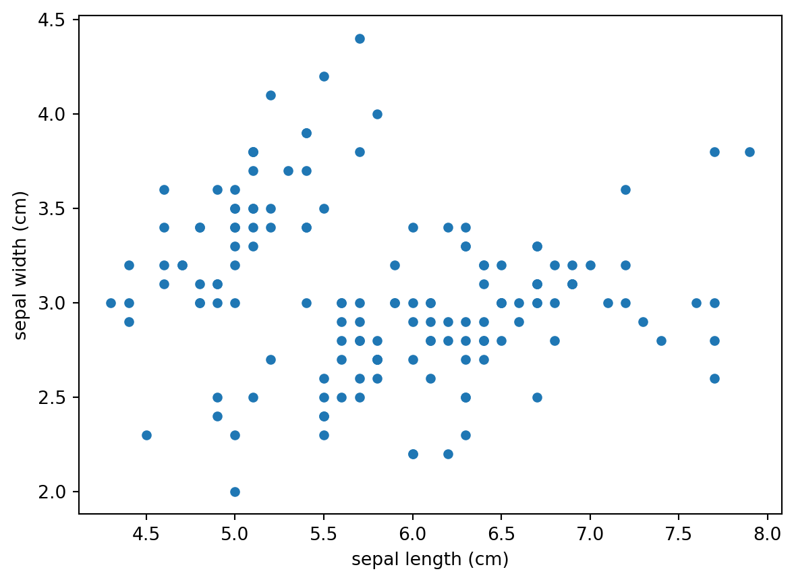
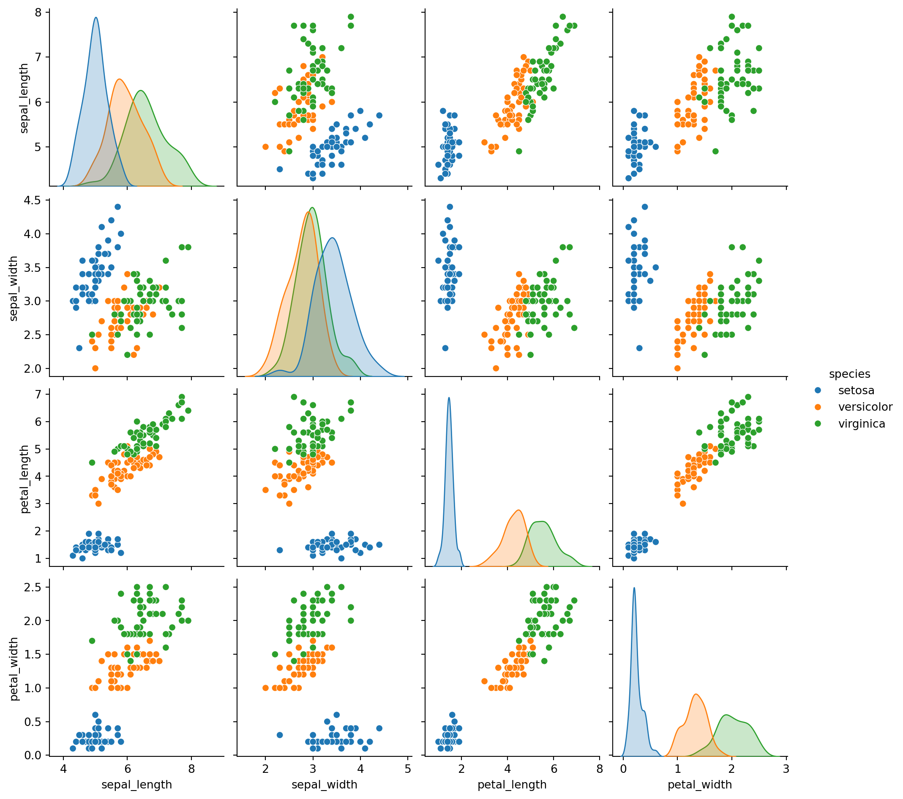
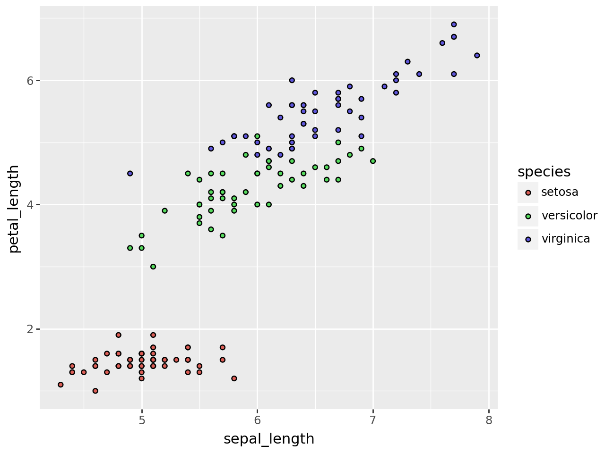

from sklearn import datasets
import pandas as pd
import numpy as np
data_iris = datasets.load_iris() #get dataVisualização de dados usando Python
Exploração de dados
O que é a visualização de dados
- É uma etapa importante no processo de ciência dos dados onde o cientista busca por determinados padrões, distribuição, tendências ou formatos específicos os quais fornecem informações relevantes para as próximas etapas durante uma análise ou avaliação de seus resultados.
Qual o objetivo
- Dar ao cientísta uma perspectiva diferente de interação com os dados que está analisando. Aumentando as possibilidades na identificação de características as quais não seriam possíveis usando outros formatos de apresentação. Isso permite traçar cenários, hipóteses e possíveis relações de causa-e-efeito.
De onde vem a demanda
- Vem da necessidade de obter um formato de apresentação de dados que seja compreendido pelo cerebro humano de maneira mais eficiência e rápida.
Como fazer
Primeiro precisamos importar as bibliotecas do Python. Neste caso importaremos inicialmente as bibliotecas pandas e numpy que são usadas para manipulação de dados assim como tidyverse, dplyr e tidyr no R.
Também faremos a importação dos dados iris que já esta armazenado na biblioteca sklearn
O próximo passo é converter o dataset em um pandas dataframe. Para quem vem do R, o pandas é um pacote similar ao tidyverse e SQL que facilita o manuseio, tratamento e manipulação de dados.
df_iris = pd.DataFrame(
data = np.c_[data_iris["data"], data_iris["target"]],
columns= data_iris["feature_names"] + ["target"]
)Vamos verificar alguns registros do conjunto de dados usando pandas.
df_iris.head(5)| sepal length (cm) | sepal width (cm) | petal length (cm) | petal width (cm) | target | |
|---|---|---|---|---|---|
| 0 | 5.1 | 3.5 | 1.4 | 0.2 | 0.0 |
| 1 | 4.9 | 3.0 | 1.4 | 0.2 | 0.0 |
| 2 | 4.7 | 3.2 | 1.3 | 0.2 | 0.0 |
| 3 | 4.6 | 3.1 | 1.5 | 0.2 | 0.0 |
| 4 | 5.0 | 3.6 | 1.4 | 0.2 | 0.0 |
Vamos criar uma variável categórica armazenando as classes do dataseet que são setosa, versicolor e virginica* e
species = []
for i in range(len(df_iris["target"])):
if df_iris["target"][i] == 0:
species.append("setosa")
elif df_iris["target"][i] == 1:
species.append("versicolor")
else:
species.append("virginica")
df_iris["species"] = speciesVamos fazer uma análise descritiva.
df_iris.groupby('species').size()
df_iris.describe()| sepal length (cm) | sepal width (cm) | petal length (cm) | petal width (cm) | target | |
|---|---|---|---|---|---|
| count | 150.000000 | 150.000000 | 150.000000 | 150.000000 | 150.000000 |
| mean | 5.843333 | 3.057333 | 3.758000 | 1.199333 | 1.000000 |
| std | 0.828066 | 0.435866 | 1.765298 | 0.762238 | 0.819232 |
| min | 4.300000 | 2.000000 | 1.000000 | 0.100000 | 0.000000 |
| 25% | 5.100000 | 2.800000 | 1.600000 | 0.300000 | 0.000000 |
| 50% | 5.800000 | 3.000000 | 4.350000 | 1.300000 | 1.000000 |
| 75% | 6.400000 | 3.300000 | 5.100000 | 1.800000 | 2.000000 |
| max | 7.900000 | 4.400000 | 6.900000 | 2.500000 | 2.000000 |
Vamos plotar um gráfico de correlação do conjunto de dados usando a biblioteca matplotlib
import matplotlib.pyplot as plt
df_iris.head(5)
df_iris.columns
df_iris.plot(
kind = "scatter",
x = 'sepal length (cm)',
y = 'sepal width (cm)')
Vamos plotar um gráfico semelhante ao anterior usando a biblioteca seaborn
import seaborn as sns
sns_iris = sns.load_dataset("iris")
sns.pairplot(sns_iris, hue = "species")
Agora vamos fazer o mesmo usando a biblioteca plotnine. Esta biblioteca foi desenvolvida usando como base o pacote ggplot2 o que pode facilitar a interpretação do código e também a construção de gráficos mais complexos usando o Python.
from plotnine import ggplot, aes, geom_point
(
ggplot(sns_iris)
+ aes(x = 'sepal_length', y = 'petal_length', fill = 'species')
+ geom_point()
)
Agora vamos construir um modelo machine learning usando a biblioteca sklearn usando o conjunto iris dataset para facilitar o entendimento.
Chamaremos a biblioteca, construiremos a matriz, e faremos o split de dados em treino e teste.
from sklearn.model_selection import train_test_split
#design matrix
X = df_iris.drop(["target", "species"], axis = 1)
#converting a numpy array petal length petal width
X = X.to_numpy()[:, (2,3)]
y = df_iris["target"]
#split into train and test set
X_train, X_test, y_train, y_test = train_test_split(X,y, test_size = 0.5, random_state=42)Vamos especificar o modelo a ser usado, neste caso vamos usar regressão logística.
from sklearn.linear_model import LogisticRegression
log_reg = LogisticRegression()
log_reg.fit(X_train, y_train)LogisticRegression()In a Jupyter environment, please rerun this cell to show the HTML representation or trust the notebook.
On GitHub, the HTML representation is unable to render, please try loading this page with nbviewer.org.
LogisticRegression()
Vamos fazer a previsão usando o conjunto de treino
mdl_pred_logreg_iris = log_reg.predict(X_train)
mdl_pred_logreg_irisarray([1., 2., 1., 0., 1., 2., 0., 0., 1., 2., 0., 2., 0., 0., 2., 1., 2.,
2., 2., 2., 1., 0., 0., 1., 2., 0., 0., 0., 1., 2., 0., 2., 2., 0.,
1., 1., 2., 1., 2., 0., 2., 1., 2., 1., 1., 1., 0., 1., 1., 0., 1.,
2., 2., 0., 1., 2., 2., 0., 2., 0., 1., 2., 2., 1., 2., 1., 1., 2.,
2., 0., 1., 1., 0., 1., 2.])Vamos fazer a previsão usando o conjunto de teste
tes_prediction = log_reg.predict(X_test)
tes_predictionarray([1., 0., 2., 1., 1., 0., 1., 2., 1., 1., 2., 0., 0., 0., 0., 1., 2.,
1., 1., 2., 0., 2., 0., 2., 2., 2., 2., 2., 0., 0., 0., 0., 1., 0.,
0., 2., 1., 0., 0., 0., 2., 1., 1., 0., 0., 1., 2., 2., 1., 2., 1.,
2., 1., 0., 2., 1., 0., 0., 0., 1., 2., 0., 0., 0., 1., 0., 1., 2.,
0., 1., 2., 0., 2., 2., 1.])Vamos avaliar a performance do modelo usando o conjunto de treino
from sklearn import metrics
print("Precision, Recall, Confusion Matrix, in training\n")
print(metrics.classification_report(y_train, mdl_pred_logreg_iris, digits = 3))
print(metrics.confusion_matrix(y_train, mdl_pred_logreg_iris))Precision, Recall, Confusion Matrix, in training
precision recall f1-score support
0.0 1.000 1.000 1.000 21
1.0 0.923 0.889 0.906 27
2.0 0.893 0.926 0.909 27
accuracy 0.933 75
macro avg 0.939 0.938 0.938 75
weighted avg 0.934 0.933 0.933 75
[[21 0 0]
[ 0 24 3]
[ 0 2 25]]Vamos avaliar a performance do modelo usando o conjunto de teste
print("Precision, Recall, Confusion Matrix, in testing\n")
print(metrics.classification_report(y_test, tes_prediction, digits = 3))
#confusion matrix
print(metrics.confusion_matrix(y_test, tes_prediction))Precision, Recall, Confusion Matrix, in testing
precision recall f1-score support
0.0 1.000 1.000 1.000 29
1.0 1.000 1.000 1.000 23
2.0 1.000 1.000 1.000 23
accuracy 1.000 75
macro avg 1.000 1.000 1.000 75
weighted avg 1.000 1.000 1.000 75
[[29 0 0]
[ 0 23 0]
[ 0 0 23]]Pra onde vai quem é o cliente
Se for nas fases iniciais de exploração o próximo passo é a construção de hipoteses e cenários.
Se for nas fases de validações e análise de resultados, a próxima etapa seria a construção de conclusões.
Qual o resultado
Facilita a análise, compreensão, explicação e comunicação dos dados.
Possibilia que a análise dos dados sejam vistos com outra perspectiva.
Melhora a consistência na apresentação de dados.
Vídeo tema para este post